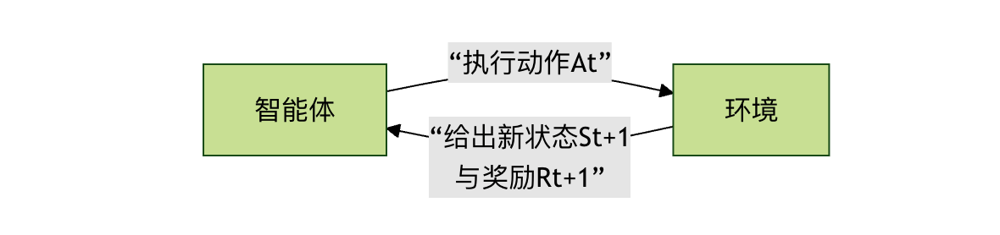

Machine Learning - Reinforcement Learning Example
Imagine you are teaching a puppy to learn the "sit" command. You don't directly tell it what the word "sit" means, but rather guide it through rewards and punishments.
- When the puppy happens to perform the sitting action, you immediately give it a treat (reward）。
- When it does wrong, you don't give it a treat (punishment）。
After many attempts, the puppy eventually understands the association between the "sit" command and getting a treat, and thus learns this skill.
Reinforcement learningIt is a machine learning method that allows a computer (or agent) to learn how to make optimal decisions to obtain maximum cumulative reward through trial-and-error-like interactions with the environment.
Reinforcement learningThere is an essential difference from the supervised learning (with standard answers) and unsupervised learning (finding inherent structure in data) we learned before. The core of reinforcement learning is theagent 与 environmentcontinuous interaction between [the agent and the environment].
Core Concept Analysis
Before diving into the code, let's understand a few key concepts. They are like the rules of a game, defining how the world of reinforcement learning operates.
-
Agent:The agent is our learner or decision-maker. In the analogy above, it is the puppy. In a program, it is an algorithm responsible for observing the environment, taking actions, and learning from the results.
-
Environment:The environment is the external world in which the agent exists. It receives the agent's actions and gives two feedback signals: the new environment state and the immediate reward brought by the action.
-
State:A state is a description of the specific situation of the environment at a given moment. For example, in a maze game, the state is the coordinates of the agent's current position.
-
Action:An action is a choice the agent can make in a certain state. For example, in a maze, actions can be up, down, left, or right.
-
Reward:A reward is a direct evaluation signal from the environment for the agent's action, usually a numeric value.Positive rewardindicates encouragement,Negative rewardindicates punishment. The ultimate goal of the agent is to maximize thetotal reward (cumulative reward)。
-
Policy:A policy is the agent's code of conduct. It defines which action should be chosen in every possible state. The learning process is essentially the process of optimizing this policy.
To more intuitively understand how these concepts work together, let's look at the basic interaction flow of reinforcement learning:

This loop continues until a terminal state is reached (such as passing or failing the game).
Classic Problem: Cliff Walking
To put theory into practice, we will use a classic reinforcement learning example environment:CliffWalking-v0(Cliff Walking). It comes fromgymnasiumlibrary (a maintained branch of the original OpenAI Gym).
Environment Description
- Scenario: a 4x12 grid world.
- Starting point: lower-left corner (coordinates [3, 0]).
- Ending point: lower-right corner (coordinates [3, 11]).
- Cliff: all positions in the bottom row except the starting and ending points ([3, 1] to [3, 10]). Falling off the cliff results in a huge penalty and returning to the starting point.
- Goal: The agent needs to safely walk from the starting point to the ending point while avoiding falling off the cliff.
- Actions: up (0), right (1), down (2), left (3).
- Rewards：
- Each step on a normal grid: -1 (encourages reaching the destination with fewer steps)
- Falling off the cliff: -100, and is sent back to the starting point
- Reaching the goal: 0, and ends this episode
Algorithm Introduction: Q-Learning
We will use theQ-Learningalgorithm to solve this problem. It is amodel-freereinforcement learning algorithm, meaning the agent does not need to know the environment's underlying rules in advance (such as state transition probabilities). It learns through continuous trial and error.
Its core is a table calledQ-table.
- 行Rows represent all possible states.
- 列Columns represent all possible actions.
- The value of a cell (Q-value)represents the long-term expected return of taking a certain action in a certain state.
The learning process of Q-Learning can be summarized in the following steps. It shows how the agent updates its knowledge (Q-table) through a single experience:

Core Formula: Bellman Equation
The mathematical basis for Q-table updates is the Bellman equation, and its update formula is as follows:
\[ Q(S, A) \leftarrow Q(S, A) + \alpha [R + \gamma \max_{a} Q(S', a) - Q(S, A)] \]
Let's break down each part of this formula:
| Symbol | Meaning | Analogy Explanation |
|---|---|---|
| \( Q(S, A) \) | Original Q-value of action A in state S | Your previous old rating of the decision to go straight at an intersection |
| \(\alpha \) | Learning rate (0 < α ≤ 1) | How much you trust this new experience. α=1 means completely replacing old knowledge with new experience; α=0.1 means the new experience only slightly corrects old knowledge |
| \(R \) | Theimmediate reward | After you go straight, you find the road is clear and get a small positive feedback (+1) |
| \(\gamma \) | Discount factor (0 ≤ γ < 1) | How much you value future rewards. γ=0 means only caring about immediate rewards; γ=0.9 means placing great importance on long-term returns |
| \(\max_{a} Q(S', a) \) | The maximum Q-value among all possible actions in the new state S' | After arriving at the new intersection, you evaluate which of turning left, turning right, or going straight has the highest future return |
| \(R + \gamma \max_{a} Q(S', a)\) | Target Q-value, representing a new and better estimate of the current decision | Combining the immediate reward and the best future return, a new rating is obtained for the decision to go straight at the old intersection |
| \(R + \gamma \max_{a} Q(S', a) - Q(S, A)\) | Temporal difference error, the gap between new and old knowledge | The difference between the new rating and the old rating. This difference drives learning. |
In simple terms, this formula allows the agent to useimmediate reward + discounted best estimate of the futureto continuously revise its judgment of the value of the current decision.
Hands-On: Writing a Q-Learning Agent
Now, let's use code to implement a Q-Learning agent that solves the Cliff Walking problem.
Step 1: Install and Import Libraries
First, make sure you have installed the necessary libraries. Run the following in the terminal or command line:
Example
Then, import them in a Python file:
Example
import numpy as np
import random
Step 2: Initialize Environment and Q-Table
Example
env = gym.make("CliffWalking-v0", render_mode="human") # render_mode="human" is used for visualization
# 2. Get environment information
n_states = env.observation_space.n # Total number of states (4*12=48)
n_actions = env.action_space.n # Total number of actions (4 directions)
# 3. Initialize the Q-table with shape [number of states, number of actions], all initial values 0
Q_table = np.zeros((n_states, n_actions))
print(f"Number of environment states: {n_states}, number of actions: {n_actions}")
print(f"Q-table shape: {Q_table.shape}")
Step 3: Set Hyperparameters
Hyperparameters are the knobs that control the algorithm's behavior and need to be adjusted according to the problem.
Example
alpha = 0.1 # Learning rate: the degree of influence of new information
gamma = 0.99 # Discount factor: importance of future rewards
epsilon = 0.1 # Exploration rate: probability of performing random exploration (rather than choosing the known best)
num_episodes = 500 # Number of training episodes (how many times the agent plays the game)
Step 4: Implement ε-greedy Strategy
This is the core strategy for the agent's decision-making; it balancesExploration 和 Exploitation。
- Exploration: randomly selecting actions to discover potentially better strategies.
- Exploitation: selecting the action the current Q-table considers optimal to obtain the maximum benefit.
Example
"""
Select an action according to the ε-greedy policy.
Parameters:
state: current state
Q_table: Q-value table
epsilon: exploration probability
Returns:
action: the selected action (0, 1, 2, 3)
"""
# Generate a random number between 0 and 1
if random.uniform(0, 1) < epsilon:
# Exploration: randomly select an action
action = env.action_space.sample()
else:
# Exploitation: select the action with the highest Q-value in the current state
# np.argmax returns the index of the maximum value, i.e., the optimal action
action = np.argmax(Q_table[state])
return action
Step 5: Core Training Loop
This is the main process by which the algorithm learns.
Example
reward_history = []
for episode in range(num_episodes):
# Reset the environment and get the initial state
state, _ = env.reset()
total_reward = 0 # Cumulative reward for this episode
terminated = False # Whether the terminal state has been reached (goal/cliff)
truncated = False # Whether terminated due to exceeding the step limit (generally will not happen in this environment)
# Interaction loop for this episode until the game ends
while not (terminated or truncated):
# 1. Select an action
action = choose_action(state, Q_table, epsilon)
# 2. Execute the action and get feedback from the environment
next_state, reward, terminated, truncated, _ = env.step(action)
# 3. Update the Q-table (Q-Learning core update formula)
# Get the current Q-value
current_q = Q_table[state, action]
# Calculate the target Q-value: immediate reward + discounted future maximum Q-value
# Note: if the next state is a terminal state, there is no future Q-value
if terminated:
target_q = reward
else:
target_q = reward + gamma * np.max(Q_table[next_state])
# Apply the Bellman equation to update the Q-value
Q_table[state, action] = current_q + alpha * (target_q - current_q)
# 4. Transition to the next state and accumulate the reward
state = next_state
total_reward += reward
# Record the total reward for this episode
reward_history.append(total_reward)
# Print progress every 100 episodes
if (episode + 1) % 100 == 0:
avg_reward = np.mean(reward_history[-100:]) # Average reward over the last 100 episodes
print(f"Episode {episode + 1}, average reward over the last 100 episodes: {avg_reward:.2f}")
# Training finished, close the environment
env.close()
Step 6: Test the Trained Agent
After training is complete, we turn off exploration and let the agent purely exploit the learned knowledge (Q-table) to go through the environment and see how it performs.
Example
# Create a new test environment (you can omit render_mode, or change it to "human" for viewing)
test_env = gym.make("CliffWalking-v0", render_mode="human")
state, _ = test_env.reset()
test_terminated = False
test_truncated = False
step_count = 0
while not (test_terminated or test_truncated):
# When testing, we set epsilon=0, i.e., pure exploitation, no exploration
action = choose_action(state, Q_table, epsilon=0)
state, reward, test_terminated, test_truncated, _ = test_env.step(action)
step_count += 1
print(f"Step {step_count}: state {state}, action {action}, reward {reward}")
print(f"Test complete! Total steps: {step_count}, total reward: {reward} (reward for reaching the goal is 0)")
test_env.close()
Running Results and Analysis
Full code:
Example
import numpy as np
import random
# =========================
# 1. Create the environment
# =========================
env = gym.make("CliffWalking-v0", render_mode="human")
# =========================
# 2. Get environment information
# =========================
n_states = env.observation_space.n
n_actions = env.action_space.n
# =========================
# 3. Initialize the Q-table
# =========================
Q_table = np.zeros((n_states, n_actions))
print(f"Number of environment states: {n_states}")
print(f"Number of actions: {n_actions}")
print(f"Q-table shape: {Q_table.shape}")
# =========================
# 4. Set hyperparameters
# =========================
alpha = 0.1
gamma = 0.99
epsilon = 0.1
num_episodes = 500
# =========================
# 5. ε-greedy policy
# =========================
def choose_action(state, Q_table, epsilon):
if random.uniform(0, 1) < epsilon:
return env.action_space.sample()
return np.argmax(Q_table[state])
# =========================
# 6. Training loop
# =========================
reward_history = []
for episode in range(num_episodes):
state, _ = env.reset()
total_reward = 0
terminated = False
truncated = False
while not (terminated or truncated):
action = choose_action(state, Q_table, epsilon)
next_state, reward, terminated, truncated, _ = env.step(action)
current_q = Q_table[state, action]
if terminated:
target_q = reward
else:
target_q = reward + gamma * np.max(Q_table[next_state])
Q_table[state, action] = current_q + alpha * (target_q - current_q)
state = next_state
total_reward += reward
reward_history.append(total_reward)
if (episode + 1) % 100 == 0:
avg_reward = np.mean(reward_history[-100:])
print(f"Episode {episode + 1}, average reward over the last 100 episodes: {avg_reward:.2f}")
env.close()
# =========================
# 7. Test the training results
# =========================
print("\n"=== Starting Test ===")
test_env = gym.make("CliffWalking-v0", render_mode="human")
state, _ = test_env.reset()
terminated = False
truncated = False
step_count = 0
total_reward = 0
while not (terminated or truncated):
action = choose_action(state, Q_table, epsilon=0)
state, reward, terminated, truncated, _ = test_env.step(action)
step_count += 1
total_reward += reward
print(f"Step {step_count}: state {state}, action {action}, reward {reward}")
print(f"Test complete, total steps: {step_count}, total reward: {total_reward}")
test_env.close()
After running the full code above, you will see two very intuitive phenomena: the change in rewards during the training phase, and the agent's actual action path during the testing phase.
1. Training Phase: Rewards Gradually Increase
During training, the console outputs the average reward of the last 100 episodes every 100 episodes. For example:
轮次 100, 最近100轮平均奖励: -120.45 轮次 200, 最近100轮平均奖励: -65.32 轮次 300, 最近100轮平均奖励: -32.18 轮次 400, 最近100轮平均奖励: -18.06 轮次 500, 最近100轮平均奖励: -13.94
You will notice an obvious trend:The average reward keeps rising (the absolute value of negative values gets smaller)。
What does this indicate?
- In the early stage of training, the agent frequently falls into the cliff and receives a large number of
-100penalties. - As training progresses, the Q-table gradually learns "which paths are dangerous and which are safe."
- The agent begins to proactively avoid the cliff and choose a safe route that is longer but has smaller penalties.
The improvement in rewards essentially reflects the improvement in policy quality.
2. Testing Phase: Agent's Behavioral Performance
In the testing phase, we setepsilonε to 0, meaning:
- No longer perform any random exploration
- Act entirely according to the optimal policy learned in the Q-table
If you have enabled itrender_mode="human", you will see a very typical behavior:
- The agent starts from the starting point
- Moves horizontally at a position one cell above the cliff
- Then moves downward when approaching the goal, safely reaching it
This is exactly what is considered in the CliffWalking environment as theoptimal policy：
- not the shortest path (hugging the cliff)
- but ratherthe minimum expected penaltypath
This reflects a core characteristic of reinforcement learning:It pursues long-term cumulative returns, not short-term optimality。
3. Why did it learn to take a detour instead of taking the risky direct path?
This is a very important and also very classic question.
From human intuition, walking along the cliff is the shortest path, but for the agent:
- With one wrong step, it immediately receives
-100a huge penalty. - By comparison, taking a few extra steps only incurs a few more penalties.
-1
Under the cumulative effect of the Bellman equation:
Steady small losses < occasional big disasters
Therefore, Q-Learning will naturally converge to a more conservative policy with a higher overall expected return.
Common Issues and Parameter Effects
1. What happens if the learning rate α is too large or too small?
- α too large: the learning process oscillates, the policy is unstable, and it easily overturns existing experience repeatedly
- α too small: learning is very slow and requires many episodes to converge
In this example,0.1is a relatively safe choice.
2. Intuitive Meaning of the Discount Factor γ
γ → 0: the agent only cares about immediate rewards and easily becomes shortsightedγ → 1: the agent greatly values long-term consequences and is more like a far-sighted planner
In the cliff walking problem, a larger γ helps the agent realize that taking one extra step now is to avoid greater losses in the future.
3. The Essential Role of ε
εIt determines the agent's personality:
- ε large → loves taking risks, explores more
- ε small → conservative, exploits existing experience more
In real projects, we usually usean ε decay strategy:：
- explore more in the early stage
- and gradually converge to a stable policy in the later stage
Limitations of This Example and Directions for Extension
Although Q-Learning is a classic, it also has obvious limitations:
- The Q-table size grows linearly with the state space
- Cannot directly handle continuous states (such as the real physical world)
- Converges slowly in complex environments
This is why, in more complex problems, we introduce:
- Deep Q-Network（DQN）
- Policy Gradient
- Actor-Critic
They use neural networks to replace the Q-table, enabling reinforcement learning to be applied to real-world scenarios such as games, robot control, and autonomous driving.
Summary
Through this complete reinforcement learning example, you have:
- Understood the fundamental difference between reinforcement learning and supervised / unsupervised learning
- Mastered the complete closed loop of agent, environment, state, action, reward, and policy
- Hand-implemented a runnable, observable, and convergent Q-Learning agent
- Understood the core idea of reinforcement learning: maximizing long-term returns
Click to Share My Notes
<p style="font-size:14px;">The note must be an extension of this article's content!</p><br> <p style="font-size:12px;"><a href="../tougao.html" target="_blank">To submit an article, click here</a></p> <p style="font-size:14px;"><a href="../w3cnote/runoob-user-test-intro.html" target="_blank">How to obtain a registration invitation code</a></p> <h3 class="text-muted"><i class="fa fa-info-circle" aria-hidden="true"></i> Before sharing notes, you must <a href=";.html" class="runoob-pop">log in</a>!</h3> <p><a href="../w3cnote/runoob-user-test-intro.html" target="_blank">How to obtain a registration invitation code</a></p>